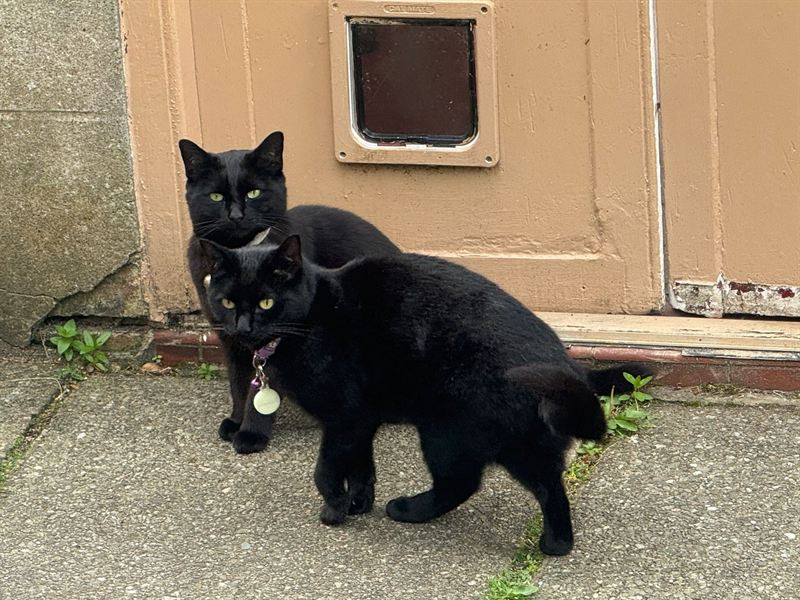

Marion Hersh
Senior Lecturer in Biomedical Engineering
I believe in working to make the world a better place for people, animals and the planet itself. I consider that research can be used to make positive change as well as contribute to knowledge and that both are important. I am also increasingly trying to use co-production approaches to research to empower the groups being researched.

My publications in numbers
- Publications
- 240
- Journal articles
- 68
- Books
- 5
- Publishing since
- 1982
Complete list of publications ORCID University of Glasgow Enlighten
My work focuses on the use of technology to overcome the disadvantages experienced by disabled and older people in particular.
Specific projects cover:
- Older autistic people’s experiences – living situations, employment and technology use – and technology development to support increased autonomy and improved quality of life.
- Mobility for blind people including route learning, spatial understanding and representations and new travel technologies.
- Designing accessible learning technologies.
I also work in the area of engineering ethics and am convenor of the International Federation of Automatic Control Working Group on Ethics. This includes work on opening up engineering to minority groups and the experiences of disabled and LGBTQ+ engineers. Information about some of my research projects can be found at http://web.eng.gla.ac.uk/assistive/